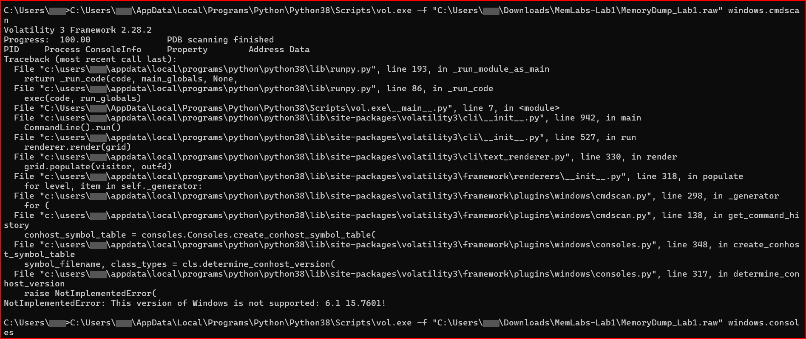
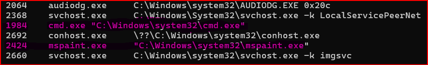
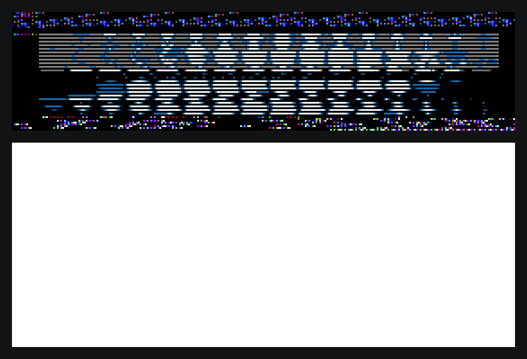

Turnabout Forensics · Case 1
Turnabout Memories
With 17 cups of coffee and a whip in my hand, I thought I was ready to tackle my first case: Turnabout Memories with memory forensics.
The case comes from MemLabs Lab 1, and it opens with the line: "My sister's computer crashed." A crash and two sisters? My mind went straight to the Miney sisters in Recipe for Turnabout. If you've played it, you know you can't take anything at face value. Memory forensics works the same way. A memory dump doesn't care what anyone says happened. It shows what was actually running when the computer went down.
I thought I was ready, but I didn't realize the Rookie Killer, Winston Payne, had already cursed me. My first obstacle: Volatility itself.
Payne's Curse
It turned out my Court Record needed a cleanup. I had Volatility 3 installed, and it has a limitation: a couple of the plugins I needed don't support this Windows 7 build. Instead of evidence, I got this:
NotImplementedError: This version of Windows is not supported: 6.1 15.7601
So I downloaded Volatility 2.6 and tried again.
Psyche-Lock 1: Gibberish in the Terminal
Once 2.6 was running, I finally got something: a command someone had typed, and what it printed back. Except, what it printed looked like gibberish. Hold it! Gibberish doesn't end up in a terminal by accident. It was encoded. One quick decode in PowerShell later, the first Psyche-Lock shattered, and Flag 1 was mine.
Rookie tip: when something looks like nonsense, ask yourself if it's hiding in plain sight.
Psyche-Lock 2: The Unfinished Drawing
I went after Paint next. The case description says the sister was drawing when the computer crashed, so whatever she drew had to still be in memory somewhere.

I dumped the Paint process, renamed the file so GIMP would open it as raw image data, and started guessing widths and offsets. I was a total rookie with GIMP, so this turned into a lot of trial and error. It took me way too long to catch that GIMP's offset is in pixels, not bytes. Each pixel is 4 bytes, so my offsets were off by a factor of 4 the whole time.

Once I caught that, things started showing up: a small icon repeating across the image, and a big white area that looked like the blank canvas. But no matter what I tried, I couldn't line up the drawing. This Psyche-Lock was not breaking today.
Maybe I'll ask Maya to channel Mia and come back to it later!
Psyche-Lock 3: Three Times Isn't a Coincidence
When a computer crashes, the first question is always: what was happening right before it? So I went through the users. One of them had a file with a name that basically begged to be opened. I dug a little deeper and found it showing up in three different places in memory. If something shows up three times, it's not a coincidence.
Getting it out took a few tries. First, Windows couldn't display a special character in one of the file names, so I had to force Python to use UTF-8. Then I went back to the Wright & Co. Law Offices for a break. When I came back, I found that --virtaddr didn't work, but --physaddr did, and the file finally came out of memory.
The archive was password protected, of course. A little bit of sleuthing later, I realized the password didn't have to be guessed. It was already sitting in memory, in a place attackers love to look. I just had to think like one. The second Psyche-Lock shattered, and inside was a picture with my third flag.
The Lock I Haven't Broken Yet
Flag 2 is still out there, hiding somewhere in that Paint memory. If you crack it before I do, tag me on LinkedIn and show me how. I'll happily admit defeat... and then try it myself.
Verdict
Every case gives me experience, and slowly I go from rookie to ace. If this post encouraged a cybersecurity professional or an Ace Attorney fan who's been thinking about joining the DFIR community, that's my win. If it was as fun to read as it was to write, that's my bonus. Our work doesn't have to be boring. We can enjoy it our own way. The Ace Attorney way!
Seventeen cups down. Time to brew the eighteenth.